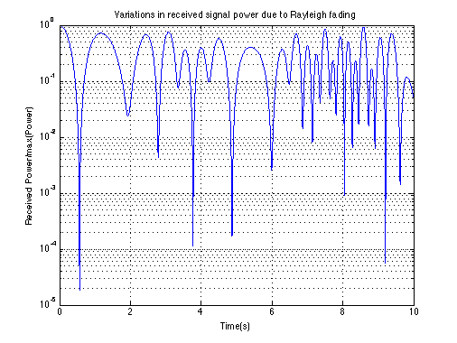

Rayleigh channel simulation
Copyright 2007 Telecommunications Lab
N=5000; %Number of paths t=0.0001:10/N:10; %Time range fc=50*10.^9; %Carrier frequency wc=2*pi*fc; v=10/3600; %Receiver speed[km/h] c=300*10^6; %Light speed wm=wc*(v/c); %Maximum shift fm=wm/(2*pi); %Doppler shift for i=1:N A(i)=(2*pi/N)*i; %Azimuthal angles wn(i)=wm*cos(A(i)); O(i)=(pi*i)/(N+1); xc(i)=2*cos(wn(i)*t(i)).*cos(O(i))+cos(wm*t(i)); xs(i)=2*cos(wn(i)*t(i)).*sin(O(i)); T(i)=((1/(2*N+1)^0.5).*(xc(i)+j*xs(i))).^2; %Complex envelope end semilogy(t,abs(T)/max(abs(T)),'b','LineWidth',1.5); %Fading graphic title('Variations in received signal power due to Rayleigh fading'); ylabel('Received Power/max(Power)'); xlabel('Time(s)'); grid on;